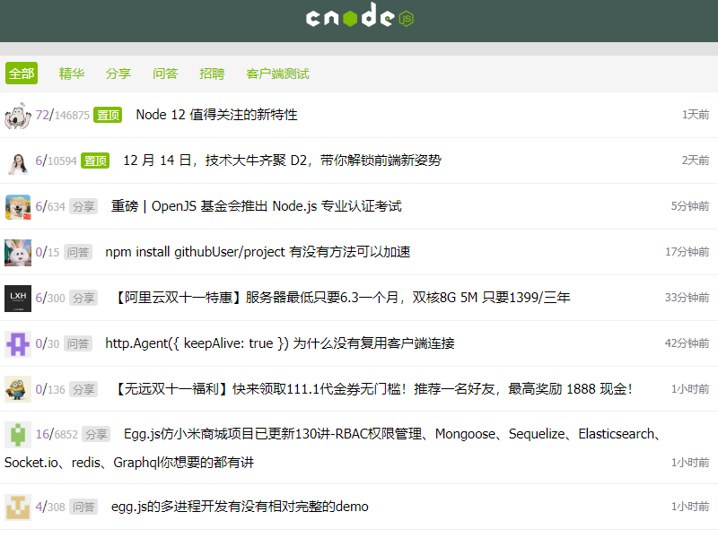

项目经历
Shared Blog
项目介绍：该项目使用 Vue 实现了一个在线博客分享的平台。包含首页、用户文章列表、个人管理等页面，实现了登录、注册、编辑、发布等功能。项目抛弃传统CSS布局，使用grid布局，以 Vue CLI为基础创建项目模版，使用 Less 作 CSS 预处理，引用 lement UI 作交互。通过 Vue Router 实现路由的跳转、异步加载、权限验证等，通过 vuex实现状态管理，用 Axios获取数据，并对接口进行了封装。
技术栈：Vue CLI/ Vue2/ Axios/ Vue Router/ Vuex/ ES6/ Npm/ Grid/ Less
Cnode社区
项目介绍：该项目使用 Vue 还原 CNode 官方社区，项目调用 CNode 官方社区提供的 API，以 Vue CLI 创建项目模版，使用 Axios 获取数据，使用 Vue Router 进行前端路由的切换及传参，使用 watch 监听路由的变化，Webpack 打包。
技术栈：Vue CLI/ Vue2/ Vue Router/ Axios/ ES6/ Npm/ SCSS
微信小程序：来翻译呀
项目介绍：一款提供翻译功能的 微信小程序，在默认情况下，不选择语言的情况下可以中汉互译。该项目以百度翻译 API为服务器域名提供支持，主要包含 翻译首页、语言列表页和翻译历史页。项目逻辑简单，页面清新，提供了14种语言选择，欢迎尝试。
技术栈：微信小程序
哆啦A梦-CSS3
项目介绍：这是一个使用原生 JS 开发的，动态显示 CSS 画一个哆啦A梦过程的小作品。该作品主要思路是通过间隔计时器遍历预先设置在 preview标签内代码，将其一个个显示在页面上，并在 style 标签上作同样处理，以使代码 CSS 生效。此外，引入prism这个库，实现了 CSS 代码高亮效果,且增加三个调速按钮和一个直接到最后结果的按钮。
技术栈：原生JS，CSS3
自制简易小画板
项目介绍：这是一个使用纯原生 JS 开发的，主要利用 HTML 5 的 Canvas API ，是我在学习原生 JS Canvas 过程中开发的小工具。 其提供在 PC及手机端在线画画、橡皮擦、画笔调色、画作删除等功能，并支持画作下载。
技术栈：原生JS，HTML5
技能描述
熟练 HTML、DIV + CSS 的页面布局，能根据设计图像素级完成页面制作
熟悉 HTML 5 及语义化，了解 Canvas 动画制作，掌握 CSS 3 动画、过渡效果等常用技术
熟悉原生 JavaScript，会使用 ES6+ 常用规范，了解 TypeScript，了解 jQuery 常用 API 及思想
熟悉 Vue 常用功能，理解如生命周期、组件、虚拟 DOM、数据响应式等概念，能够使用 Vue 全家桶开发项目
熟悉模块化、工程化开发流程，能够配置 Webpack
有移动端开发经验，会使用REM、vw/ vh、响应式 等技术制作适配手机设备的页面
了解 HTTP 相关知识，了解常见的 Web 性能优化方案
了解 Node.js，能够开发简单的后台服务器
个人经历
2018 年 7 月毕业中南林业科技大学，在校期间成绩优异，曾多次获奖学金。毕业后就职于深圳领益科技有限公司，由于本身专业软硬件都有涉及，所以当时选择硬件方面就职。
工作期间接触了前端，发现自己十分感兴趣，迄今为止利用所有业余时间自学前端半年多。
热爱 coding，享受调试代码及解决 bug 的过程，享受通过各种代码组合实现自己成果的过程。有良好的代码规范，热衷分享，崇尚开源文化。